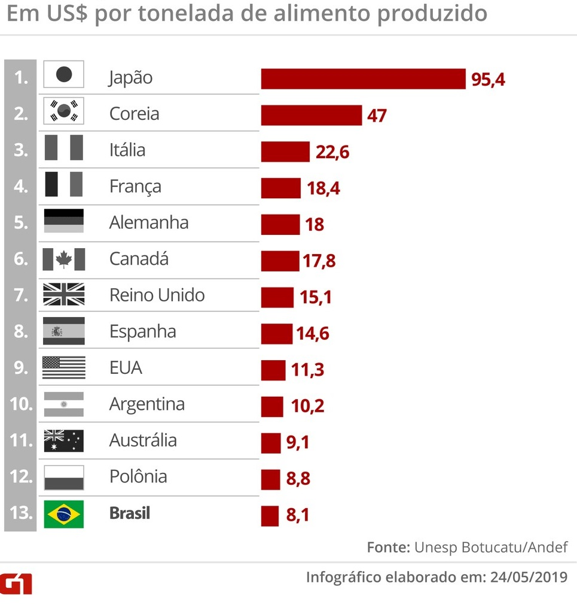
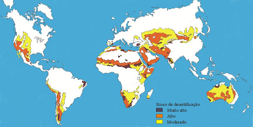
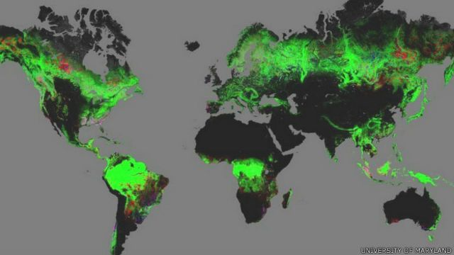
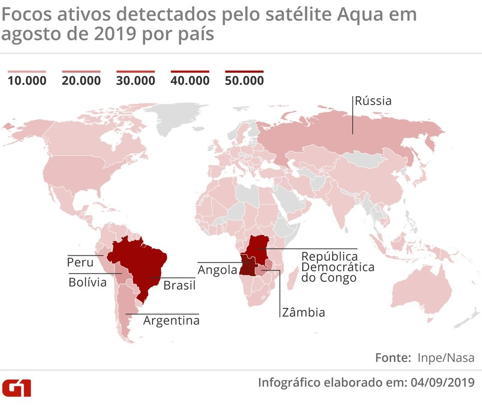
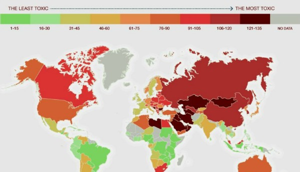

Maiores consumidores de agrotóxicos:
Maiores picos de desertificação:
Evolução do desmatamento:
Queimadas em agosto/19:
Países que mais contribuem com a poluição:
colunadeitada
Projetos que contribuem com o ODS 15:
SOS MATA ATLÂNTICA
A Fundação SOS Mata Atlântica é uma ONG que atua desde 1986 no Brasil, e busca proteger e recuperar a Mata Atlântica. Sendo assim, realiza diversos trabalhos de recuperação e monitoramento dessas regiões. Em levantamento recente realizado pela ONG, foi apontado que seus projetos de restauração florestal foram responsáveis pelo plantio de mais de 36 milhões de mudas de árvores nativas ao longo de 30 anos.
Mais sobreUTARE: Unidade de tratamento de águas residuais
Os estudantes do SESI do Rio de Janeiro, pensaram na UTARE, sigla que deram para a Unidade de Tratamento de Águas Residuais, criada por eles com materiais econômicos como brita, esponja biomecânica, areia fina e carvão ativo. A solução é composta por um dispositivo de filtragem com a etapa física, que retira os resíduos maiores; uma etapa química, que retira o odor, gosto e coloração; e uma etapa biológica, que decompõe os compostos nitrogenados da água. Após esse processo, a água pode ser devolvida à natureza com uma condição apropriada.
Mais sobre
FUNDO AMAZÔNIA
O Fundo Amazônia é gerido pelo Banco Nacional de Desenvolvimento Econômico e Social (BNDES), sendo responsável por captar doações para investimentos não reembolsáveis em projetos e ações relacionados à Amazônia, com os seguintes focos: Prevenção, monitoramento e combate ao desmatamento; Estímulo à conservação e uso sustentável de recursos naturais. Além disso, até 20% dos recursos do fundo podem ser utilizados para esses tipos de trabalhos em outros biomas do território brasileiro e em outros países tropicais. A cada ano, o número de projetos aprovados pela iniciativa tem crescido e beneficiado a vida terrestre brasileira.
Mais sobreSobre:
Oiie, me chamo Raphaela Alves, sou de Poá/SP e tenho 16 anos, estou cursando o último ano do ensino médio e faço curso técnico em Marketing na Etec. Me sinto grata e muito feliz por ter participado desse projeto tão lindo, que tem mudado minha vida, quero agradecer a cada voluntário e principalmente a Professora Juliana Ribeiro por ter me ajudado a chegar até aqui, agradeço também a ONG Esperança e Destino pela oportunidade!